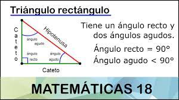

Triángulo Rectángulo
¿Qué es?
Un triángulo rectángulo es cualquier triángulo con un ángulo recto y dos agudos. Los lados de un triángulo rectángulo se llaman catetos e hipotenusa. Los catetos son los lados opuestos a los ángulos agudos, y son los lados menores del triángulo.La principal característica del triángulo es que, como ampliaremos más adelante, tiene un lado de mayor longitud (llamado hipotenusa) y otros dos denominados catetos cuya unión forma el ángulo recto.
Fórmula para calcular el área
Es necesario destacar que el área ha de calcularse en unidades al cuadrado, así que si los datos están en centímetros, el área estará en centímetros al cuadrado. Para ello, es imprescindible que las unidades coincidan, así que si un lado de la figura está en metros, el otro también deberá estarlo y, si no lo está, deberemos pasarlo para unificar las unidades. Esto es obligatorio.
Cuando estos puntos están claros, ya podemos calcular el área de un triángulo rectángulo mediante la siguiente fórmula:
Área = (b x h) / 2
Calcular el perímetro
El perímetro de un triángulo rectángulo es la longitud total alrededor del triángulo. Podemos calcular el perímetro al sumar las longitudes de todos los lados del triángulo. Dado que podemos usar el teorema de Pitágoras para encontrar la longitud de un tercer lado si es que conocemos las longitudes de dos lados del triángulo, simplemente necesitamos la longitud de dos lados del triángulo.
